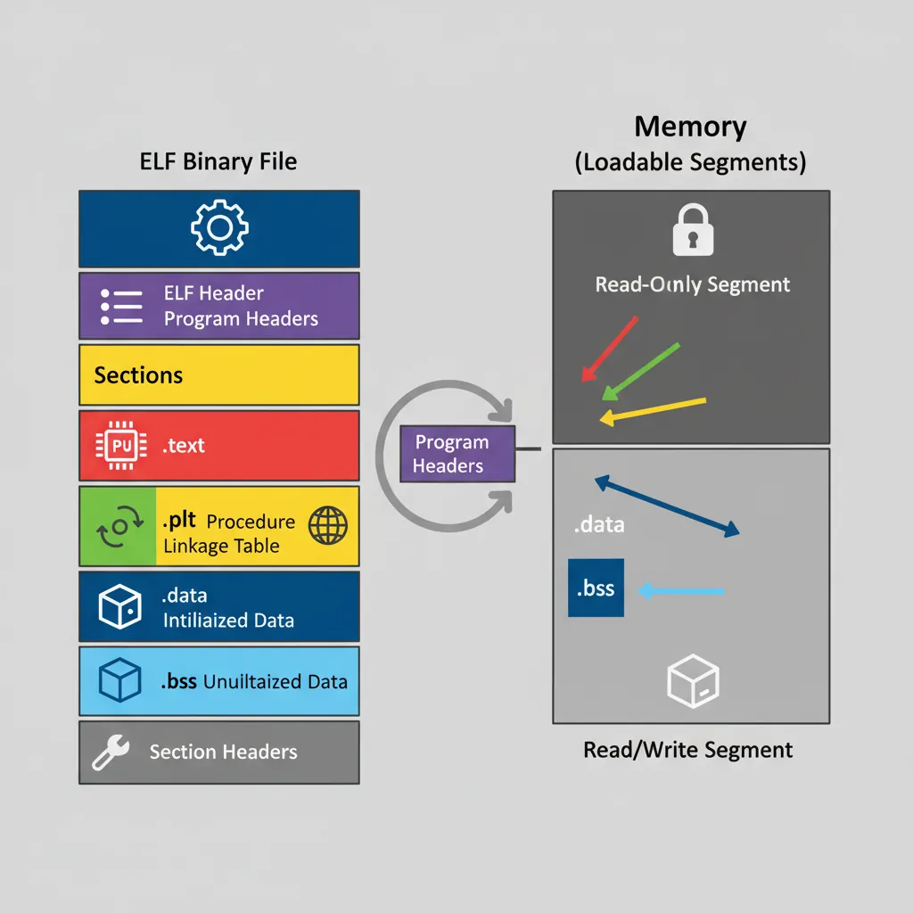
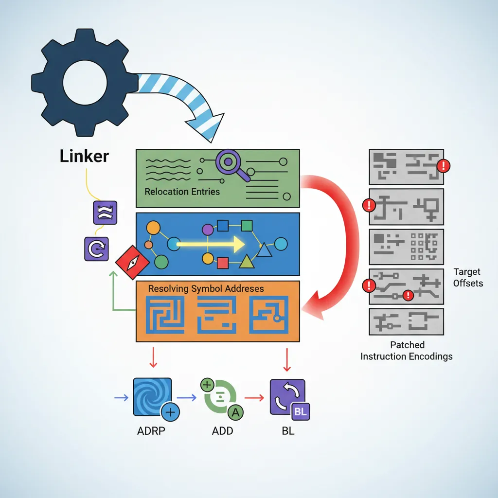
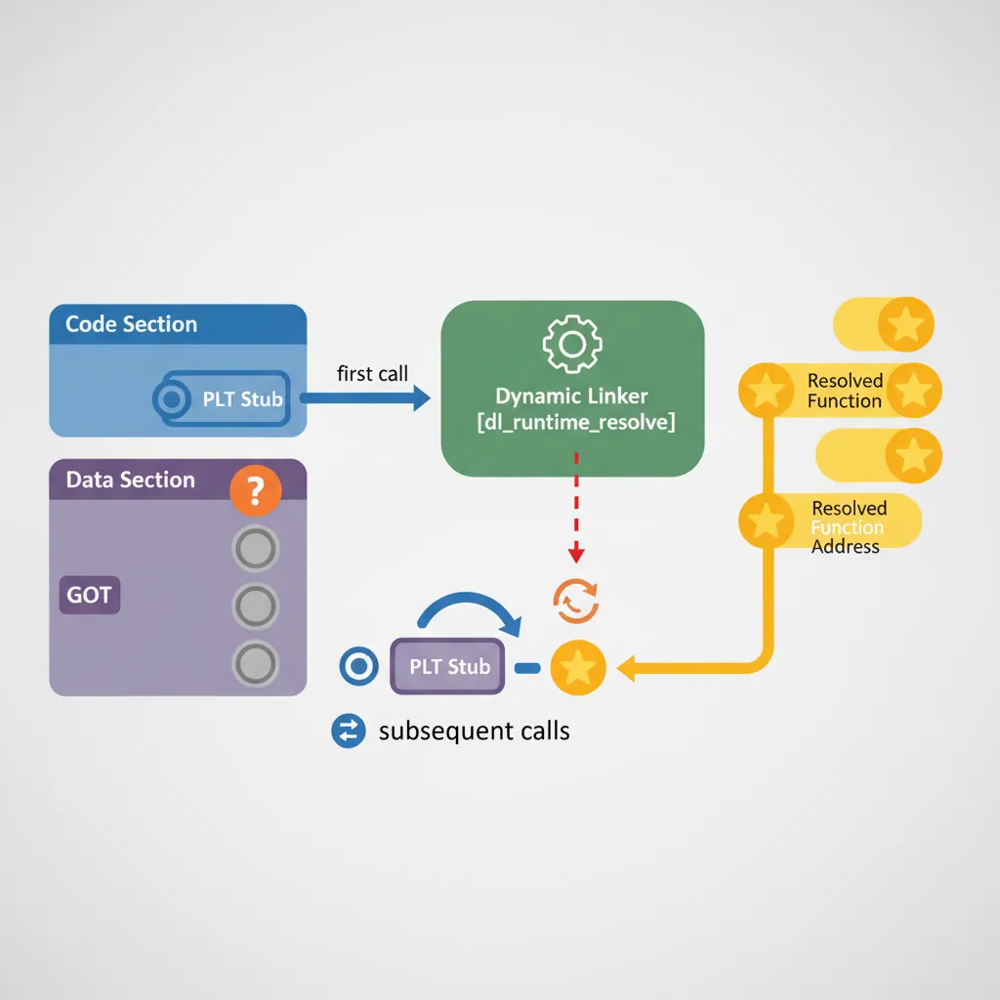
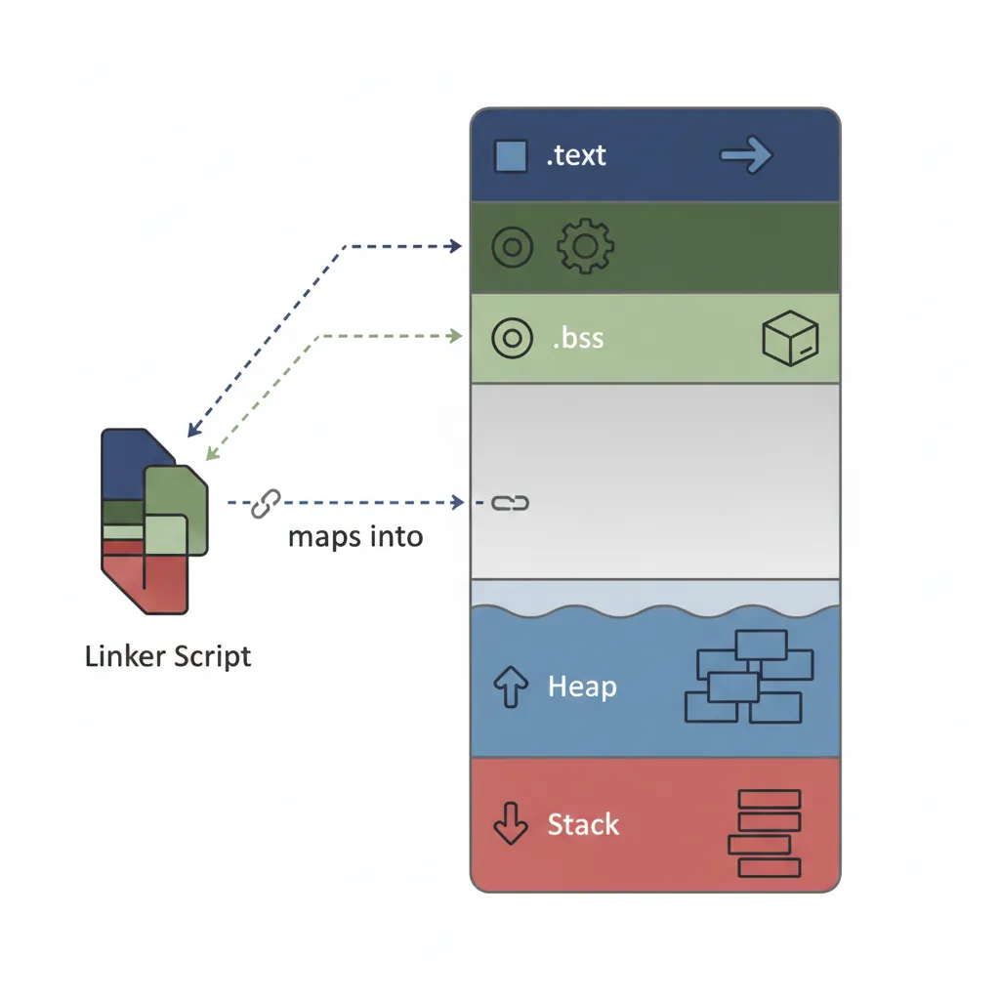
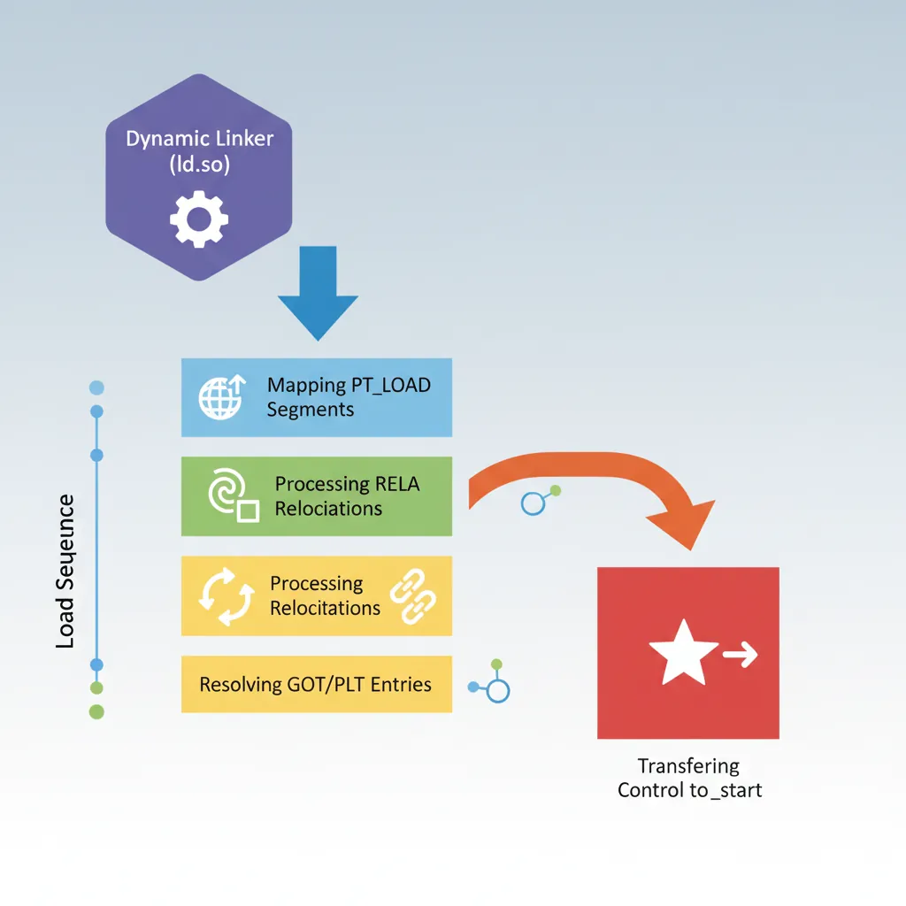

ELF Section Anatomy
ARM Assembly Mastery
Architecture History & Core Concepts
ARMv1→v9, RISC philosophyARM32 Instruction Set Fundamentals
ARM vs Thumb, CPSRAArch64 Registers & Data Movement
X/W regs, addressing modesArithmetic, Logic & Bit Manipulation
ADD/SUB, bitfield, CLZBranching, Loops & Conditional Execution
Branch types, jump tablesStack, Subroutines & AAPCS
Calling conventionsMemory Model, Caches & Barriers
Weak ordering, DMB/DSB/ISBNEON & Advanced SIMD
Vector ops, intrinsicsSVE & SVE2 Scalable Vectors
Predicate regs, HPC/MLFloating-Point & VFP Instructions
IEEE-754, rounding modesException Levels, Interrupts & Vectors
EL0–EL3, GICMMU, Page Tables & Virtual Memory
Stage-1 translationTrustZone & Security Extensions
Secure monitor, TF-ACortex-M Assembly & Bare-Metal
NVIC, SysTick, linker scriptsCortex-A System Programming & Boot
EL3→EL1, MMU setup, PSCIApple Silicon & macOS ABI
ARM64e PAC, Mach-O, dyldInline Assembly & C Interop
Constraints, clobbersPerformance Profiling & Micro-Opt
Pipeline hazards, PMUReverse Engineering & Binary Analysis
ELF, disassembly, CFRBuilding a Bare-Metal OS Kernel
Bootloader, UART, schedulerARM Microarchitecture Deep Dive
OOO pipelines, branch predictVirtualization Extensions
EL2 hypervisor, stage-2, KVMDebugging & Tooling Ecosystem
GDB, OpenOCD/JTAG, ETM/ITMLinkers, Loaders & Binary Format Internals
ELF deep dive, relocations, PIC, crt0Cross-Compilation & Build Systems
GCC/Clang toolchains, CMakeARM in Real Systems
Android, FreeRTOS/Zephyr, U-BootSecurity Research & Exploitation
ASLR, PAC attacks, ROP/JOPEmerging ARMv9 & Future Directions
MTE, SME, confidential compute
# Inspect all sections of an AArch64 binary:
aarch64-linux-gnu-readelf -S /bin/ls | head -60
# [Nr] Name Type Address Off Size
# [ 1] .interp PROGBITS 0000000000000238 000238 00001c # /lib/ld-linux-aarch64.so.1
# [ 2] .note.gnu.build-id NOTE 0000000000000254 000254 000024
# [11] .init PROGBITS 0000000000004000 003000 000018 # init code
# [12] .plt PROGBITS 0000000000004020 003020 000590 # PLT stubs
# [13] .plt.got PROGBITS 0000000000004800 003800 000030 # PLT GOT stubs
# [14] .text PROGBITS 0000000000004830 003830 013c4c # main code
# [24] .got PROGBITS 0000000000033000 032000 000038 # GOT (holds resolved addresses)
# [25] .got.plt PROGBITS 0000000000033038 032038 0002e0 # GOT.PLT (lazy binding targets)
# [26] .data PROGBITS 0000000000033320 032320 0000e0
# Program headers (segments — what the OS loader actually maps):
aarch64-linux-gnu-readelf -l /bin/ls | grep -A2 LOADRELA Relocations
# Dump all RELA entries (Relocation with Explicit Addend):
aarch64-linux-gnu-readelf -r /bin/ls | head -40
# Relocation section '.rela.plt' at offset 0x748 contains 93 entries:
# Offset Info Type Sym. Value Sym. Name + Addend
# 000000033040 000400000402 R_AARCH64_JUMP_SLOT 0000000000000000 free@GLIBC_2.17 + 0
# 000000033048 000500000402 R_AARCH64_JUMP_SLOT 0000000000000000 abort@GLIBC_2.17 + 0
# AArch64 Relocation Type Reference:
# R_AARCH64_NONE (0) — no-op
# R_AARCH64_ABS64 (257)— 64-bit absolute address
# R_AARCH64_COPY (1024)—copy relocation for .bss symbols in DSO
# R_AARCH64_GLOB_DAT (1025)—resolve symbol address into GOT slot
# R_AARCH64_JUMP_SLOT (1026)—lazy PLT target (most common)
# R_AARCH64_RELATIVE (1027)—base + addend (used for PIC data references)
# R_AARCH64_CALL26 (283) —B/BL 26-bit branch: encode PC-relative offset
# R_AARCH64_ADR_PREL_PG_HI21 (275)—ADRP instruction page offset
# R_AARCH64_ADD_ABS_LO12_NC (277)—ADD immediate lower 12 bits
# See actual relocation bytes in .o file before linking:
aarch64-linux-gnu-gcc -c hello.c -o hello.o
aarch64-linux-gnu-readelf -r hello.o
# .rela.text entries:
# 000000000010 000200000116 R_AARCH64_ADR_PREL_PG_HI21 0 .rodata + 0
# 000000000014 000200000115 R_AARCH64_ADD_ABS_LO12_NC 0 .rodata + 0
# 000000000018 000300000107 R_AARCH64_CALL26 0 printf + 0
# These are filled by the static linker (ld) or patched at load time by ld.soPLT, GOT & Lazy Binding
1. First call to
printf() hits PLT stub → loads GOT.PLT[n] → redirects to _dl_runtime_resolve2.
_dl_runtime_resolve looks up printf in loaded shared libraries3. Writes real
printf address into GOT.PLT[n]4. All subsequent calls hit PLT → GOT.PLT[n] → direct jump to
printf. No resolver cost.

// AArch64 PLT stub disassembly (typical):
// Address: .plt + 0x20 (first actual stub after PLT[0])
//
// .plt[0]: preamble — save IP, load resolver address from GOT.PLT[1,2]
// 0x4000: stp x16, x30, [sp, #-16]! // Save scratch + LR
// 0x4004: adrp x16, 33000 // ADRP → page of GOT.PLT
// 0x4008: ldr x17, [x16, #0x40] // Load GOT.PLT[resolver_offset]
// 0x400C: add x16, x16, #0x40
// 0x4010: br x17 // Jump to _dl_runtime_resolve or real addr
// Individual PLT stub (e.g. for free@GLIBC_2.17):
// 0x4040: adrp x16, 33000 // Page of GOT.PLT
// 0x4044: ldr x17, [x16, #0x48] // Load GOT.PLT entry for 'free'
// 0x4048: add x16, x16, #0x48
// 0x404C: br x17 // First call → resolver; after → real free()
// On AArch64, x16 (IP0) and x17 (IP1) are intra-procedure-call scratch registers
// reserved specifically for PLT stubs (AAPCS AArch64 calling convention)Position-Independent Code (PIC/PIE)
# Compile with PIC (shared library):
aarch64-linux-gnu-gcc -fPIC -shared -o libfoo.so foo.c
# Compile PIE executable (position-independent executable, ASLR-compatible):
aarch64-linux-gnu-gcc -fPIE -pie -o foo foo.c
# Verify: PIE binaries have ET_DYN type, not ET_EXEC:
aarch64-linux-gnu-readelf -h foo | grep Type
# Type: DYN (Position-Independent Executable file)// ── How the compiler generates PIC code on AArch64 ──
// Non-PIC (position-dependent): uses absolute address
// Problem: absolute address is wrong if loaded at a different address
adrp x0, my_global
add x0, x0, :lo12:my_global // Assembler fills in absolute page + offset
// RELA entry: R_AARCH64_ABS64 at the instruction — loader must patch at load
// PIC global data access (via GOT):
// Compiler generates:
adrp x0, :got:my_global // PC-relative page of GOT entry
ldr x0, [x0, :got_lo12:my_global] // Load GOT entry → address of my_global
ldr x1, [x0] // Dereference to get the actual data
// RELA: R_AARCH64_GLOB_DAT fills the GOT entry at load time
// The two-instruction GOT indirection is PC-relative → works at any load address
// PIC function call (via PLT):
// Compiler generates:
bl my_extern_func // Assembler emits R_AARCH64_CALL26 reloc
// Linker redirects to PLT stub, which loads target from GOT.PLT
// Result: call is position-independent; target patched by dynamic linkerLinker Scripts
# Minimal linker script for ARM64 bare-metal (from Part 20):
cat kernel.ld
/* kernel.ld — bare-metal AArch64 linker script for QEMU virt */
OUTPUT_FORMAT("elf64-littleaarch64")
OUTPUT_ARCH(aarch64)
ENTRY(_start)
MEMORY {
/* QEMU virt: RAM starts at 0x40000000 */
RAM (rwx) : ORIGIN = 0x40000000, LENGTH = 128M
}
SECTIONS {
/* Kernel code loaded at 0x40000000 */
. = 0x40000000;
.text.boot : { *(.text.boot) } /* boot.S must be first */
.text : { *(.text .text.*) }
.rodata : { *(.rodata .rodata.*) }
. = ALIGN(4096); /* Page-align data sections */
.data : { *(.data .data.*) }
. = ALIGN(8);
_bss_start = .;
.bss : { *(.bss .bss.* COMMON) }
. = ALIGN(8);
_bss_end = .;
/* Heap starts after BSS — bump allocator uses this */
_heap_start = .;
. += 4M; /* Reserve 4 MB for heap */
_heap_end = .;
/* Stack: 4KB per task × 8 tasks = 32 KB */
. = ALIGN(4096);
_stack_base = .;
. += 32K;
_stack_top = .;
}# View the final link map (where everything landed):
aarch64-linux-gnu-ld -T kernel.ld -Map kernel.map \
boot.o uart.o vectors.o kernel.o -o kernel.elf
grep -E "^\.text|^\.data|^\.bss|_stack" kernel.map | head -20crt0 & ELF Startup Sequence
// crt0.S — minimal C runtime startup for bare-metal AArch64
// This is what links between _start (boot.S) and main()
.global crt_start
crt_start:
// ABI: x0 = argc, x1 = argv, x2 = envp (Linux); bare-metal: all 0
mov x0, #0 // argc = 0
mov x1, #0 // argv = NULL
mov x2, #0 // envp = NULL
// Call global/static constructors (C++ init, attribute((constructor)))
adrp x3, __init_array_start
add x3, x3, :lo12:__init_array_start
adrp x4, __init_array_end
add x4, x4, :lo12:__init_array_end
.call_ctors:
cmp x3, x4
b.ge .ctors_done
ldr x5, [x3], #8 // Load function pointer from .init_array
blr x5 // Call constructor
b .call_ctors
.ctors_done:
// Call main()
bl main
// Call global destructors (.fini_array) after main returns
// ... (similar loop over __fini_array_start..__fini_array_end) ...
// For bare-metal: loop forever; for Linux: call exit(r)
bl _exitDynamic Linker Internals
# Trace dynamic linker activity (ld.so):
LD_DEBUG=all LD_DEBUG_OUTPUT=/tmp/dl.log /bin/ls /tmp
grep -E "symbol|binding|plt" /tmp/dl.log.PID | head -30
# Key ld.so operations:
# 1. Read PT_INTERP segment to find ld.so path (/lib/ld-linux-aarch64.so.1)
# 2. Map all PT_LOAD segments of binary + all DT_NEEDED shared libs
# 3. Process RELA relocations:
# - R_AARCH64_RELATIVE: base + addend (no symbol lookup needed)
# - R_AARCH64_GLOB_DAT: lookup symbol, write address to GOT
# - R_AARCH64_JUMP_SLOT: write PLT resolver or real addr into GOT.PLT
# 4. Call DT_INIT + .init_array constructors
# 5. Transfer control to e_entry (crt0 _start)
# Show shared library dependencies and load addresses:
ldd /bin/ls
# linux-vdso.so.1 (0x0000ffff8da72000)
# libselinux.so.1 => /lib/aarch64-linux-gnu/libselinux.so.1 (0x0000ffff8da00000)
# libc.so.6 => /lib/aarch64-linux-gnu/libc.so.6 (0x0000ffff8d860000)
# /lib/ld-linux-aarch64.so.1 (0x0000ffff8da85000)
# vDSO: a virtual DSO mapped by the kernel at boot, provides zero-syscall clock_gettime
# On AArch64: mapped at high address, contains e.g. __vdso_clock_gettime
Case Study: Android's Linker — Bionic vs glibc
Why Android Wrote Its Own Dynamic Linker
Android doesn't use glibc's ld-linux-aarch64.so.1 — it uses Bionic's linker64, a custom dynamic linker optimized for mobile constraints. The design decisions map directly to the concepts in this article:
- No lazy binding: Unlike glibc's ld.so which resolves PLT entries on first call, Android's linker64 resolves all relocations at load time (equivalent to
LD_BIND_NOW=1). Why? Lazy binding's first-call penalty causes visible UI jank on app startup. Pre-resolving all GOT.PLT entries atdlopen()time trades 10-50ms of startup for perfectly predictable call latency. - RELR compressed relocations: Android pioneered RELR (Relative Relocation) sections — a bitmap encoding of R_AARCH64_RELATIVE relocations that achieves 10-100x compression over RELA. A typical Android shared library has thousands of RELATIVE relocations (one per global pointer in PIC code); RELR reduces their storage from 24 bytes each to ~0.5 bytes each.
- Namespace isolation: Android's linker supports "linker namespaces" — each app gets a private view of which shared libraries it can see. This is implemented at the linker level (not the kernel level) by maintaining per-namespace symbol lookup tables, preventing one app's libraries from interfering with another's.
- TEXTREL enforcement: Android enforces that no shared library has text relocations (TEXTREL flag in ELF dynamic section). If your .so requires patching .text at load time, it won't load on Android. This ensures .text is truly read-only and can be shared across all processes mapping the same library — essential when RAM is precious.
Key lesson: The "standard" glibc linker behavior isn't the only option. Android's choices show how ELF linking mechanisms can be reconfigured for different performance/security trade-offs on the same ARM64 ISA.
From a.out to ELF: The Binary Format Wars
The ELF format we use today wasn't always the standard:
- 1975 — a.out: Unix V6's original binary format. No shared libraries, no relocations, fixed load address. The binary was literally a memory dump with a tiny header.
- 1988 — COFF: Added section tables and relocations but still awkward for shared libraries. Used on early Windows (PE/COFF is a derivative).
- 1995 — ELF standardization: SVR4 Unix adopted ELF (Executable and Linkable Format). Its dual-view design (sections for linkers, segments for loaders) made position-independent shared libraries practical. Linux adopted ELF in 1995 (kernel 1.x); it became the universal standard for ARM, x86, MIPS, RISC-V.
- 2017 — RELR: Google engineers added RELR to the ELF spec (SHT_RELR), dramatically compressing the most common relocation type. Adopted in Android, ChromeOS, and later glibc 2.36.
Hands-On Exercises
ELF Dissection Challenge
Using any AArch64 Linux system (or cross-tools on x86):
- Compile a simple "Hello, World" as both static and dynamic:
aarch64-linux-gnu-gcc -static -o hello_static hello.candaarch64-linux-gnu-gcc -o hello_dynamic hello.c - Compare sizes:
ls -la hello_static hello_dynamic(static is typically 10-100x larger) - Count sections:
readelf -S hello_static | wc -lvsreadelf -S hello_dynamic | wc -l - Count relocations:
readelf -r hello_dynamic | wc -l— the dynamic binary should have RELA entries; the static binary should have zero - Find the entry point:
readelf -h hello_dynamic | grep Entry— is it_startormain?
Question: Why does the static binary have no .plt or .got sections? What took their place?
PLT/GOT Live Patching Observation
Watch lazy binding happen in real-time:
- Compile:
aarch64-linux-gnu-gcc -o demo demo.c -lm(ensure it callssin()from libm) - Run with:
LD_DEBUG=bindings ./demo 2>&1 | grep sin— observe when and howsinis resolved - In GDB:
break *0x...(address of PLT stub for sin). Run, hit breakpoint, examine GOT.PLT entry:x/gx 0x...— it should point back to the resolver - Continue past the breakpoint (sin is called). Re-examine the same GOT.PLT entry — it should now contain the real address of
sin()in libm - Now recompile with
-Wl,-z,now(bind now, no lazy). Repeat GDB inspection — GOT.PLT should already have the real address before main starts
Compare: Measure startup time with and without -z,now using time. For a binary with many library calls, bind-now is measurably slower at startup but faster per-call.
Write a Custom Linker Script
Create a linker script for a specialized memory layout:
- Define two memory regions:
FLASH (rx) : ORIGIN = 0x08000000, LENGTH = 512KandRAM (rwx) : ORIGIN = 0x20000000, LENGTH = 128K - Place .text and .rodata in FLASH, .data and .bss in RAM
- Add a
.data_loadsection that stores initialized data in FLASH (LMA) but loads into RAM (VMA) — this is the AT() directive:.data : AT(__data_load_addr) { *(.data) } > RAM - Export symbols for the crt0 to copy .data from FLASH to RAM at boot:
__data_load_start,__data_start,__data_end - Write a minimal crt0 that copies .data and zeroes .bss using these linker-exported symbols
Verify: Link a test program, then use readelf -l to confirm that .data's VMA (virtual address) is in RAM but its file offset (LMA proxy) would correspond to FLASH. Use objdump -h to see both VMA and LMA columns.
Conclusion & Next Steps
The path from gcc -o foo foo.c to a running process traverses the assembler, linker, ELF format, OS loader, dynamic linker, crt0, and finally your code. Understanding each layer means you can diagnose relocation errors, write bare-metal linker scripts, build ASLR-hardened PIE binaries, and audit PLT stubs in security research. Android's Bionic linker shows how these same ELF mechanisms are tuned for mobile, and the exercises let you dissect real binaries, watch lazy binding live, and write custom linker scripts from scratch.
Next in the Series
In Part 25: Cross-Compilation & Build Systems, we configure GCC and Clang cross-toolchains, set up sysroots and multilib, build with CMake targeting AArch64, and generate production firmware images.